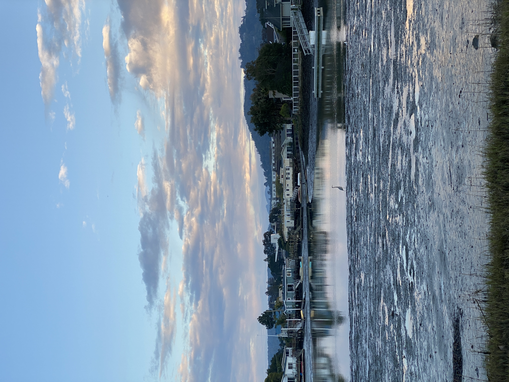

| Name | Location | Distance | Estimated Time |
|---|---|---|---|
| North Shore Trail | Point Lobos State Reserve - Carmel-By-The-Sea, CA | 2.8 - 3.2 Mi. | 1.5 - 2 Hrs. |
| Bluffs - Panorama - Ridge Loop | Andrew Molera State Park - Big Sur, CA | 9 Mi. | 4.5 Hrs. |
| River Trail - Hidden Trail | Andrew Molera State Park - Big Sur, CA | 3.6 Mi. | 2 Hrs. |
| Mount Manuel Trail | Pfeiffer Big Sur State Park - Big Sur, CA | 10.4 Mi. | 5.5 Hrs. |
| Tan Bark Trail to Tin House | Julia Pfeiffer Burns State Park - Big Sur, CA | 6.4 Mi. | 4 Hrs. |
| McWay Falls and Saddle Rock | Julia Pfeiffer Burns State Park - Big Sur, CA | 0.7 Mi. | .5 Hrs. |
| The Limekilns and Limekiln Falls | Limekiln State Park - Big Sur, CA | 1 - 2.4 Mi. | .5 - 1.5 Hrs. |
| Ewoldsen Trail | Julia Pfeiffer Burns State Park - Big Sur, CA | 4.7 Mi. | 3 Hrs. |
| Pine Ridge Trail to Terrace Creek | Pfeiffer Big Sur State Park to Ventana Wilderness - Big Sur, CA | 10.6 Mi. | 5 Hrs. |
| Garrapata Beach and Bluff Trail | Garrapata State Park - Big Sur, CA | 1 - 2.5 Mi. | 1 - 1.5 Hrs. |
| South Shore Trail | Point Lobos State Reserve - Carmel-By-The-Sea, CA | 2 Mi. | 1 Hrs. |
| Monterey Bay Coastal Trail | Monterey, CA | 4.6 Mi. | 2 Hrs. |
| Carmel Beach | Carmel-By-The-Sea, CA | 2.4 Mi. | 1.5 Hrs. |
| Carmel Meadows to Monastery Beach | Carmel-By-The-Sea, CA | 2.2 Mi. | 1.5 Hrs. |
| Cypress Grove Trail | Point Lobos State Reserve - Carmel-By-The-Sea, CA | 0.8 Mi. | .5 Hrs. |
| Pfeiffer Falls - Valley View Loop | Pfeiffer Big Sur State Park - Big Sur, CA | 2.2 Mi. | 1 Hrs. |
